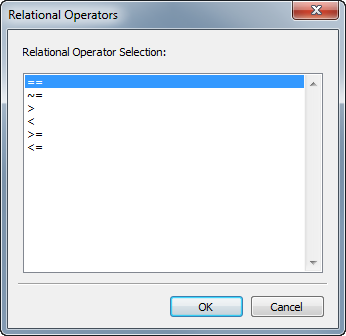

If
If — Conditionally execute a series of commands
Script Syntax
Iflogical expression[script statement] …EndIf
Iflogical expression[script statement] …Else[script statement] …EndIf
Description
The If command is a control logic statement that executes a series of commands if the value of the provided logical expression is true. The syntax of the logical expression is described in the script language reference.
The If command can optionally contain an Else clause that defines a series of commands to execute if the associated logical expression is false.
See Also: Script Language, For, While
GUI
 |
The If command GUI panel features a table in which you can build a complex logical expression. The rows of the table correspond to individual relational expressions in a compound logical expression (up to 10), and the columns correspond to individual elements of those expressions. The first line automatically contains a default statement:
If DefaultSC.ElapsedDays < 1.0The first column of the first row contains a placeholder for the If command name. This cannot be changed. The first column of each additional row contains the logical operator (&, |) that joins the expression in that row with the one above it. To select a logical operator, double-click or right-click in the appropriate box in the table to display a selection window. Click the correct operator and click OK to select it.
 |
The Left Hand Side column contains the left-hand side of each individual expression. Double-click the cell to type a parameter name. To set this value from a parameter selection list instead, either click “…” to the left of the cell you want to set, or right-click the cell itself. A ParameterSelectDialog window will appear that allows you to choose a parameter.
 |
The Condition column contains the conditional operator (==, ~=, <, etc.) that joins the left-hand and right-hand sides of the expression. To select a relational operator, double-click or right-click in the appropriate box in the table, and a selection window will appear. Click the correct operator and click OK to select it.
|  |
Finally, the Right Hand Side column contains the right-hand side of the expression. This value can be modified the same way as the Left Hand Side column.
When you are finished, click Apply to save your changes, or click OK to save your changes and close the window. The command will be validated when either button is clicked.
Examples
A simple If statement:
Create Spacecraft aSat
Create ForceModel aForceModel
Create Propagator aProp
aProp.FM = aForceModel
BeginMissionSequence
Propagate aProp(aSat) {aSat.ElapsedDays = 1, aSat.Altitude = 300}
If aSat.Altitude < 301 & aSat.Altitude > 299
% propagation stopped on altitude constraint
Else
% propagation continued for 1 day
EndIf